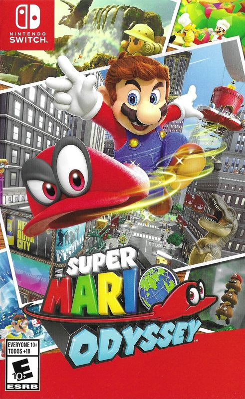

Video Game Review

Super Mario Odyssey
Nintendo Switch
Super Mario Odyssey, developed and published by Nintendo, is a 3D platforming game released in 2017
exclusively for the Nintendo Switch. As a devoted fan of the Mario franchise, I was thrilled to get my hands
on this installment, and I can confidently say that it exceeded my expectations. In this review, I will
discuss various aspects of the game, including the story, gameplay, graphics, and sound.
Story
In Super Mario Odyssey, our beloved hero Mario sets off on a globe-trotting adventure to rescue Princess
Peach from the clutches of the notorious Bowser, who plans to marry her. Along the way, Mario teams up with
Cappy, a sentient hat with unique abilities. Together, they explore various kingdoms to gather Power Moons
and put an end to Bowser's nefarious plans. While the story may not be groundbreaking, the charm and humor
of the Mario universe are present throughout, making for an enjoyable experience.
Gameplay
Super Mario Odyssey builds upon the classic 3D platforming mechanics of previous Mario titles while
introducing new and innovative gameplay elements. The most notable addition is Cappy, Mario's new companion,
which allows players to "capture" enemies and objects, granting Mario their abilities. This mechanic adds a
layer of depth and creativity to the gameplay, providing unique ways to traverse environments and solve
puzzles.
The game features a multitude of diverse kingdoms, each with its own distinct visual style, challenges, and
secrets to uncover. The open-ended design of the kingdoms encourages exploration and rewards players for
their curiosity. Collecting Power Moons is necessary to progress through the game, and many are cleverly
hidden, which adds to the sense of discovery and accomplishment.
Controls in Super Mario Odyssey are smooth and responsive, making the platforming sections a delight to
play. The game also supports various control schemes, including the use of the Joy-Con controllers and the
Switch Pro Controller, accommodating different player preferences.
Graphics
Super Mario Odyssey boasts colorful and vibrant graphics that bring each kingdom to life. The game's art
style is both charming and visually impressive, showcasing the Nintendo Switch's capabilities. Each kingdom
has a unique aesthetic, ranging from the lush vegetation of the Cascade Kingdom to the bustling urban
environment of the Metro Kingdom, creating a diverse and visually striking experience.
Sound
The game features a lively and catchy soundtrack that captures the spirit of each kingdom. Classic Mario
tunes are mixed with new compositions, providing a sense of nostalgia while also feeling fresh. The sound
design is top-notch, with environmental sounds and character voices adding to the overall atmosphere.
Conclusion
Super Mario Odyssey is a fantastic addition to the Mario franchise and a must-play for any Nintendo Switch
owner. Its engaging gameplay, inventive mechanics, stunning visuals, and memorable soundtrack make it a
standout title in the series. Whether you're a long-time fan of Mario or new to the franchise, Super Mario
Odyssey is sure to provide hours of joy and entertainment.
Did you enjoy my review of this album? Check out one of my favorite album reviews below or see a
list of my reviews!
More importantly, I'm always looking for new music to enjoy. Let
me know what you're currently listening to!
My Favorites
Read why these albums are my all-time favorites!